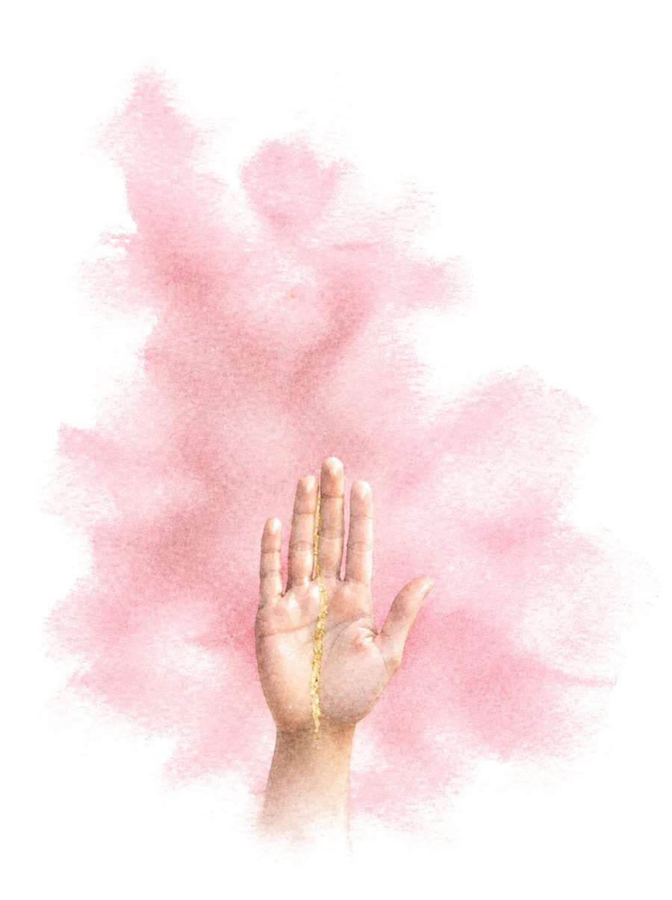

Коуч ICF в Швейцарии и психолог в Украине. Подробнее обо мне и о том, как я работаю →
Где тебе трудно сказать «нет» и как сказать его мягко и твёрдо

Граница — это не стена и не ссора. Это место, где заканчивается то, на что ты согласна, и начинается твоё «нет». После переезда, в своём деле и в паре границы часто стираются: ты соглашаешься, чтобы не обидеть, не потерять и не показаться неблагодарной. Этот лист поможет увидеть, где твоё «нет» уже звучит, где пока молчит и с какой фразы начать. Одним маленьким шагом.
Соглашаешься, когда хочешь отказать, а потом злишься на себя или чувствуешь вину. Сил и времени на своё не остаётся.
Карта шести сфер твоей жизни: где «нет» уже звучит, где пока молчит и что мешает. Одна граница, с которой можно начать, готовая фраза и маленький шаг на эту неделю.
«Нет» другому часто означает «да» себе. Граница растёт, как мышца: начинать лучше не с самого трудного разговора, а с маленького «нет» там, где безопасно.
Твои ответы остаются только у тебя, на этом устройстве. Я их не вижу.
Отметь всё, что узнаёшь. Можно пропустить.
Отметь до трёх мыслей, которые звучат в тебе чаще всего.
В файле твоя карта границ, твои слова, первая граница, фраза и маленький шаг. На последней странице бланк, чтобы четыре недели отмечать от руки, где ты сказала «нет».
Удалить все ответы и все листы с этого устройства? Если хочешь их сохранить, сначала скачай PDF или резервную копию.